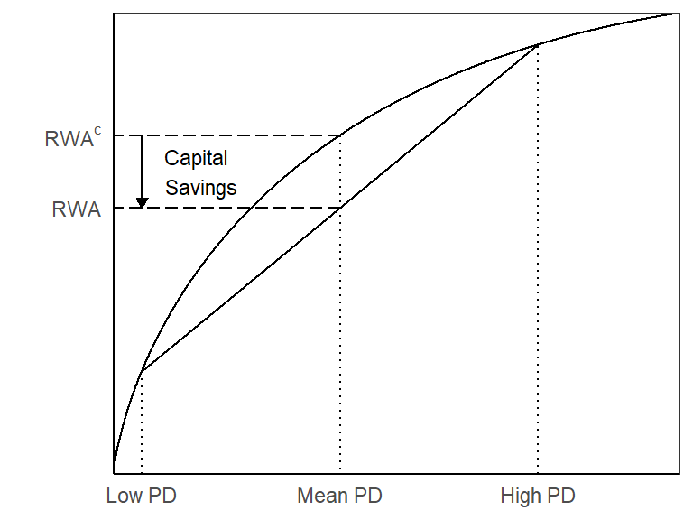
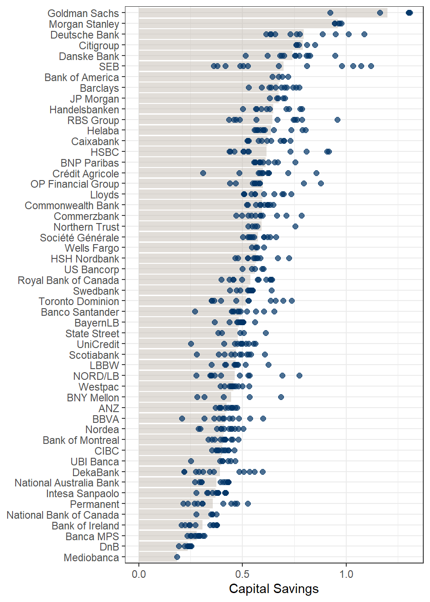
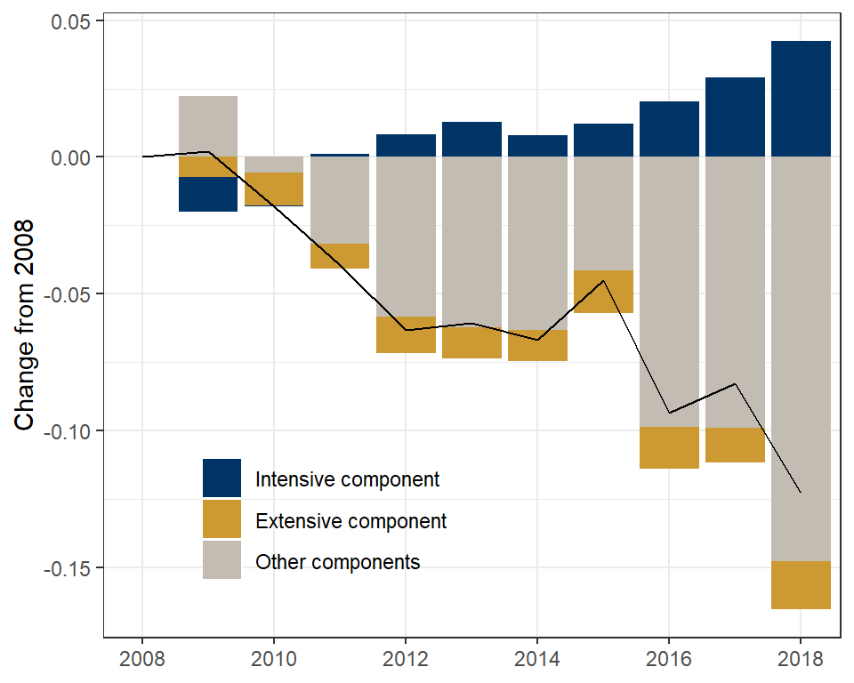
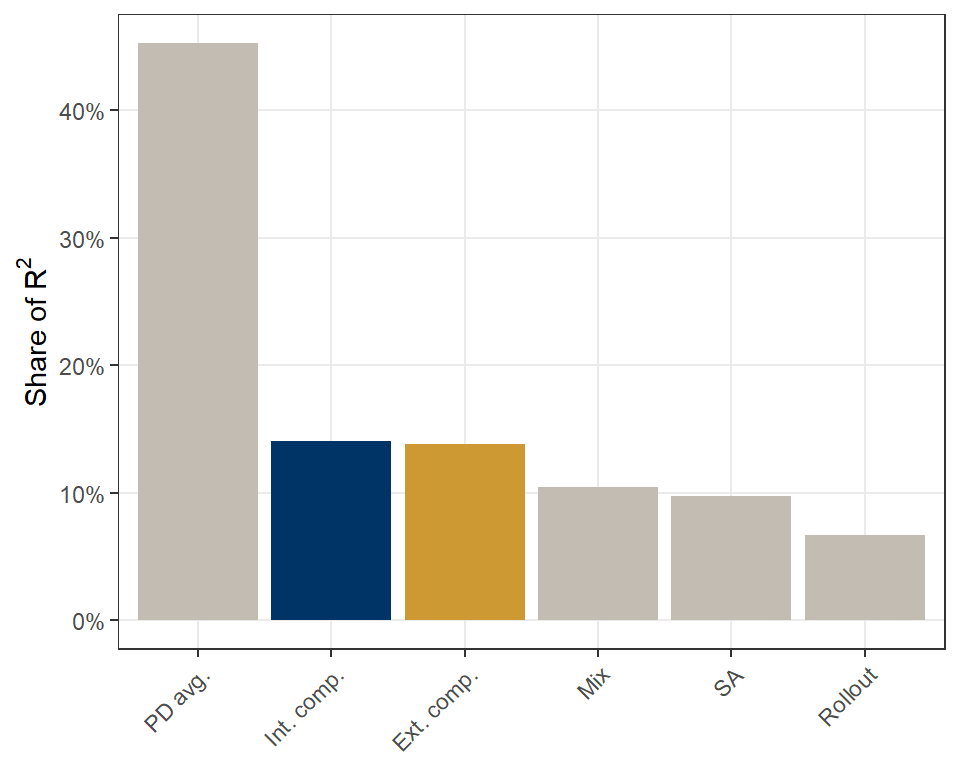
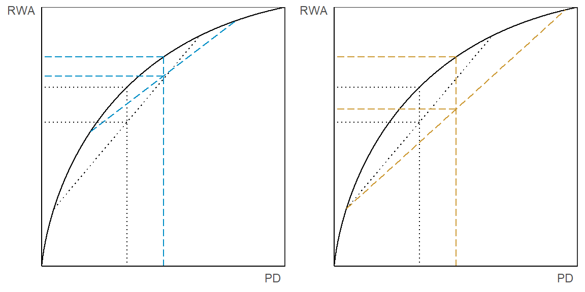

The concavity of IRB formulas creates countercyclical capital savings.
Credit Risk Distribution and Capital Savings
Lucas Avezum 1, 2
l.avezum@uvt.nl
1 CentER, Tilburg University
2 EBC
Introduction
The Basel II accord introduced a concave mapping from probabilities of default (PD) to capital requirements for banks adopting the internal ratings-based (IRB) approach. Therefore, total capital requirement depends not only on the average PD but also on the shape of the PD distribution. Using a hand-collected dataset, I propose a measure that decomposes the contribution of the PD distribution to capital requirements into an average component and a shape component. I document that the latter is an important factor of risk-weight variability across banks. I further investigate the prior ambiguous direction of its relationship with the business cycle and find it to be countercyclical. Altogether, the results suggest that a recalibration of the current IRB framework can significantly reduce the procyclicality of capital requirements.
The Measure
Consider two portfolios. The first contains a low PD asset and a high PD asset in equal proportions. The second has the same total amount as the first but contains only a mean PD asset, where mean PD is the arithmetic mean of low PD and high PD.
Figure 1 shows the amount of risk-weighted assets (RWA) calculated for each portfolio under the IRB approach: \(\text{RWA}\) for the first and \(\text{RWA}^c\) for the second. Because of the concavity of the IRB formula \(\text{RWA}^c\) is greater than \(\text{RWA}\).

Figure 1: The figure plots the method to measure capital savings.
I use this idea to construct a measure that reflects differences in RWA coming from differences on the shape of the PD distribution. The measure is straightforward: compare the actual capital requirement (\(\text{RWA}\)) to the counterfactual case where the requirement for the entire portfolio is calculated using the portfolio’s average PD (\(\text{RWA}^c\)). The measure of capital savings (\(\text{RWA}^s\)) is defined as follows:
\[ \text{Capital Savings} = \text{RWA}^s = \frac{\text{RWA}^c}{\text{RWA}} \]
Data
The paper introduces a hand-collected dataset to quantify the intensity of the capital savings across banks and time.

Figure 2: The figure plots capital savings across banks. Each point is a bank-year observation and bars are the averages values for each bank.
I include the capital savings measure in a decomposition analysis of risk-weights’ (RW). The extensive component measures the contribution of capital savings as banks move their portfolio from the SA to the IRB approach while holding the shape of the PD distribution constant. The intensive component measures the contribution of capital savings from changes of the shape of the PD distribution while holding the extensive component constant.

Figure 3: The figure plots the cross-bank average contribution of the several RW components and average RW (solid line) for each year relative to 2008.

Figure 4: The figure plots the percentage of total RW variation explained by each of its components in the cross-section.
Results
Next, I test if capital savings are pro- or countercyclical. The expected direction is ambiguous. On the one hand, if the entire portfolio is equally affected, capital savings are procyclical. On the other hand, if riskier assets are more sensitive to credit shocks, then capital savings are countercyclical. Figure 5 illustrates the two possible outcomes.

Figure 5: The figure shows the two possible outcomes of a negative credit risk shock on a portfolio. The left-hand side plot shows the case where capital savings are procyclical. The right-hand side plot shows the case where capital savings are countercyclical.
Which of the two effects dominates is an empirical question. Table 1 provides evidence supporting the second scenario, i.e., countercyclical capital savings.
| Dependent variable: ΔLog RWAsi,j,t | ||||
| j = Total | j = Retail | j = Wholesale | j = Corporate | |
| (1) | (2) | (3) | (4) | |
| Δ Log GDPi,t | -0.487** | -0.108 | -0.550** | -0.465** |
| (0.226) | (0.262) | (0.229) | (0.198) | |
| Bank FE | Yes | Yes | Yes | Yes |
| Year FE | Yes | Yes | Yes | Yes |
| N | 441 | 376 | 441 | 394 |
| R2 | 0.129 | 0.132 | 0.120 | 0.098 |
Table 2 uses the following equality to calculate the contribution of capital savings (and other components) to the cyclicality of capital ratios:
\[ \small \begin{aligned} \Delta \text{Log Cap. Ratio}_{i,t} &= \Delta \text{Log Capital}_{i,t} - \Delta \text{Log RWA}_{i,t} \\ &= \Delta \text{Log Capital}_{i,t} - \Delta \text{Log RWA}^c_{i,t} + \Delta \text{Log RWA}^s_{i,t} \end{aligned} \small \]
| ΔLog Cap. Ratioi,t | ΔLog Capitali,t | ΔLog RWAi,t | ΔLog RWAci,t | ΔLog RWAsi,t | |
| (1) | (2) | (3) | (4) | (5) | |
| Δ Log GDPi,t | 1.787** | 0.625 | -1.162 | -1.369* | -0.207 |
| (0.793) | (0.396) | (0.745) | (0.751) | (0.238) | |
| Effect | 100.0 % | 35.0 % | 65.0 % | 76.6 % | -11.6 % |
| Bank FE | Yes | Yes | Yes | Yes | Yes |
| Year FE | Yes | Yes | Yes | Yes | Yes |
| N | 413 | 413 | 413 | 413 | 413 |
| R2 | 0.105 | 0.258 | 0.118 | 0.135 | 0.093 |
Conclusion
Capital savings due to the shape of PD distribution and the concavity of the IRB formulas are:
- economically relevant. They explain 27% of the RW variation across banks.
- countercyclical. Reduce the procyclicality of RWA by 11.6 percentage points.
Hence, the concavity of IRB formulas could be explored to reduce procyclicality of capital regulation.